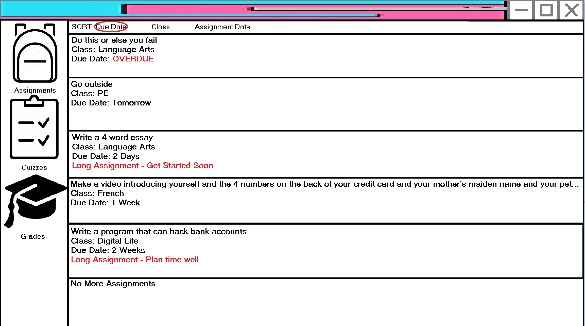
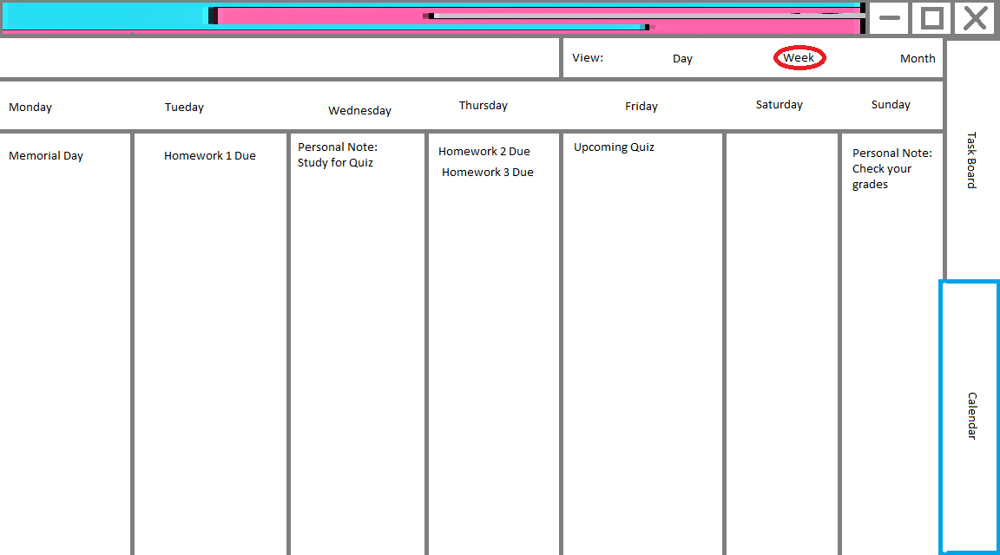

What is CyberSpace?
CyberSpace is the revolutionary video-conferencing app aiming to streamline online education.
You may be asking why this is necessary when many similar platforms such as Zoom and Microsoft Teams already exist.
However, CyberSpace is designed specifically for an educational context. This allows students to stay engaged during classes and is much more manageable for teachers.
Meetings
Meetings are the industry-leading technology allowing us to bridge the gap between virtual and in-person learning. Our meetings come with a variety of different features to help you and your students learn more effectively.
Learn More

Assignments
Assignments are the go-to option for teachers, whether that is for classwork, homework, quizzes, or anything else that might need to be distributed. Our assignments are fast and easy to use, allowing teachers to spend more time teaching and less time with technology troubles.
Learn More

Social
The Social tab is for anything outside the classroom. Students can communicate and discuss, even outside of class. Our chats come with powerful moderation features to allow students to chat freely while still monitering them during class.
Learn More

Calendar
The Calendar is a versatile tool for tracking dates and times. Our calendar comes with built-in support for tasks and to-dos, letting students manage their time more effectively.
Learn More
